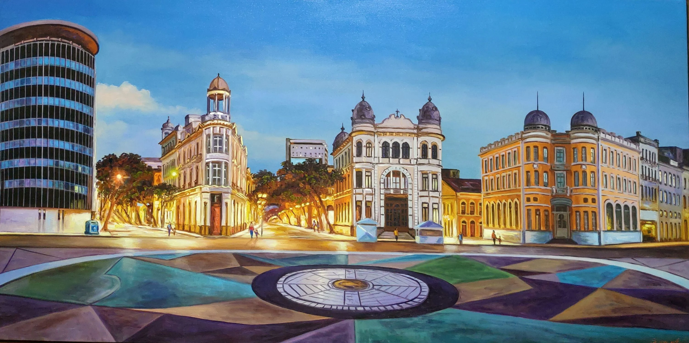

O Marco Zero de Recife
O Marco Zero é um dos pontos turísticos mais emblemáticos da cidade de Recife, localizado no coração do Recife Antigo, na beira do Rio Capibaribe.
Este local é conhecido por ser o marco inicial de todas as estradas de Pernambuco, e também é famoso por seu belo obelisco e rosa dos ventos.
O Marco Zero também é um ponto de encontro de culturas, com diversas atrações culturais e artísticas que acontecem ao longo do ano, como shows, feiras, e festivais.